DDS Mid-term Project Code2
Adam E.
2023-12-09
General Information: https://thegrowlerguys.com/understanding-abv-and-ibu/
What is the IBU?
Beer is produced by fermenting starch and then flavored with hops. Hops are the plants that contribute to the bitterness of a beer, but not all hops will make beer bitter. The bitterness comes from alpha acids found in the resin glands of the flowers of the hop plants. The degree of bitterness will depend on three factors:
The type of hops used. Hops with a higher concentration of alpha
acids will generate a stronger bitter taste. These are usually referred
to as “bittering hops.” Hops with less concentration are called “aroma
hops” and will add flavors such as citrus, pine, or mango. The amount of
hops added. It should be no surprise that the more hops added to the
brew, the more bitterness there will be.
When the hops are added. Adding hops early in the brewing process will
make the beer more bitter. When hops are added late in the process, the
hops contribute more to the beer’s aroma. IBU stands for International
Bitterness Units. The IBU scale ranges from 5 to 100+, although anything
over 100 is difficult to differentiate. Most craft beers range between
10 to 80. A beer over 60 is considered bitter.
However, before you rely on the IBU score to pick your beer, it’s essential to understand how ABV should impact your decision.
What is ABV? ABV stands for alcohol by volume. It is a standard measurement of the alcohol content of the beverage. Alcohol content will vary depending on the types of base grains used in its production. During fermentation, yeasts eat the sugars from the grain and create carbon dioxide and alcohol. Darker, bolder beers are produced with grains with higher sugar content, such as malts, and may also have additives like honey or chocolate. More sugar in the production will increase the alcohol content and ABV score.
Some dark beers, such as Great Notion’s “Vanilla Double Stack” Imperial Stout, are produced for a rich, smooth taste and contain an ABV of 11% but have an IBU of 0. Another Stout, Gigantic’s “Fancy Pants” stout, contains an ABV of 7.2% and an IBU of 55, resulting in slightly less sweetness.
What if a beer has a high IBU and a high ABV? Here’s the tricky part. A higher ABV can cancel out much of the bitterness of a high IBU. When a beer contains malts, the sugar content of the malts will make the beer far less bitter but will increase the alcohol content. This results in a high IBU and high ABV. Because of this, it’s important to consider how high the ABV score is in conjunction with the IBU and not rely solely on the IBU. For example, many people will find the “Fancy Pants” stout above tastes smoother than Ex Novo’s “For Whom the Helles Tolls” lager with an ABV of 4.9% and IBU of 22.
#IBU list: https://www.bjcp.org/beer-styles/downloads-and-resources/
Packages
Data Import from csv
This data was collected in January 2017 from CraftCans.com.
#Question 2: Merge beer data with the breweries data. Print the first 6 observations and the last six observations to check the merged file. (RMD only, this does not need to be included in the presentation or the deck.)
Path <- "D:/University/SMU/Doing_Data_Science/DDS_repository/Doing-Data-Science/Unit7/Beers.csv"
Beer_Data = read.csv(Path, header=TRUE)
#Beer_Data
Path2 <- "D:/University/SMU/Doing_Data_Science/DDS_repository/Doing-Data-Science/Unit7/Breweries.csv"
Breweries_Data = read.csv(Path2, header=TRUE)
#Breweries_Data
# Merge the data on the ID
merged_data <- inner_join(Beer_Data, Breweries_Data, by = c("Brewery_id" = "Brew_ID"))
merged_data# List of US states
us_states <- c(
"Alabama", "Alaska", "Arizona", "Arkansas", "California", "Colorado", "Connecticut",
"District of Columbia", "Delaware", "Florida", "Georgia", "Hawaii", "Idaho", "Illinois", "Indiana", "Iowa",
"Kansas", "Kentucky", "Louisiana", "Maine", "Maryland", "Massachusetts", "Michigan",
"Minnesota", "Mississippi", "Missouri", "Montana", "Nebraska", "Nevada", "New Hampshire",
"New Jersey", "New Mexico", "New York", "North Carolina", "North Dakota", "Ohio", "Oklahoma",
"Oregon", "Pennsylvania", "Rhode Island", "South Carolina", "South Dakota", "Tennessee",
"Texas", "Utah", "Vermont", "Virginia", "Washington", "West Virginia", "Wisconsin", "Wyoming"
)
# List of US state abbreviations
us_state_abbreviations <- c(
"AL", "AK", "AZ", "AR", "CA", "CO", "CT", "DC", "DE", "FL", "GA", "HI", "ID", "IL", "IN", "IA",
"KS", "KY", "LA", "ME", "MD", "MA", "MI", "MN", "MS", "MO", "MT", "NE", "NV", "NH", "NJ",
"NM", "NY", "NC", "ND", "OH", "OK", "OR", "PA", "RI", "SC", "SD", "TN", "TX", "UT", "VT",
"VA", "WA", "WV", "WI", "WY"
)
# Create a data frame to store the information
us_states_data <- data.frame(State_Names = us_states, Abbreviation = us_state_abbreviations)
cat("Unique values in 'Abbreviation' column:\n")## Unique values in 'Abbreviation' column:unique_abbreviations <- unique(us_states_data$Abbreviation)
unique_abbreviations## [1] "AL" "AK" "AZ" "AR" "CA" "CO" "CT" "DC" "DE" "FL" "GA" "HI" "ID" "IL" "IN" "IA" "KS" "KY" "LA" "ME" "MD" "MA" "MI" "MN" "MS" "MO" "MT" "NE" "NV" "NH" "NJ" "NM" "NY" "NC"
## [35] "ND" "OH" "OK" "OR" "PA" "RI" "SC" "SD" "TN" "TX" "UT" "VT" "VA" "WA" "WV" "WI" "WY"# Iterate through the 'State' column and remove leading whitespace
for (i in 1:length(merged_data$State)) {
merged_data$State[i] <- trimws(merged_data$State[i])
}
merged_data2 <- merge(merged_data, us_states_data, by.x = "State", by.y = "Abbreviation", all.x = TRUE)
# Rename columns to Human readable data.
merged_data2 <- merged_data2 %>%
rename("Abbr" = "State", "Beer_Name" = "Name.x", "Brewery_Name" = "Name.y", "State" = "State_Names")
# Check the unique values for errors
cat("Unique values in 'State' column:\n")## Unique values in 'State' column:unique_states <- unique(merged_data2$State)
unique_states## [1] "Alaska" "Alabama" "Arkansas" "Arizona" "California" "Colorado" "Connecticut"
## [8] "District of Columbia" "Delaware" "Florida" "Georgia" "Hawaii" "Iowa" "Idaho"
## [15] "Illinois" "Indiana" "Kansas" "Kentucky" "Louisiana" "Massachusetts" "Maryland"
## [22] "Maine" "Michigan" "Minnesota" "Missouri" "Mississippi" "Montana" "North Carolina"
## [29] "North Dakota" "Nebraska" "New Hampshire" "New Jersey" "New Mexico" "Nevada" "New York"
## [36] "Ohio" "Oklahoma" "Oregon" "Pennsylvania" "Rhode Island" "South Carolina" "South Dakota"
## [43] "Tennessee" "Texas" "Utah" "Virginia" "Vermont" "Washington" "Wisconsin"
## [50] "West Virginia" "Wyoming"# # Write the file for hand incorporation of IBU
# WritePath <- "D:/University/SMU/Doing_Data_Science/DDS_repository/Doing-Data-Science/Unit7/Beer_merged2.csv"
#
# write.csv(merged_data2, file = WritePath, row.names = FALSE)
# Import the new data with additional IBU info
Path3 <- "D:/University/SMU/Doing_Data_Science/DDS_repository/Doing-Data-Science/Mid-term_project/beer_data_updated.csv"
beer_data_updated = read.csv(Path3, header=TRUE)
# replace the old IBU values with the new IBU values
merged_data2$IBU <- beer_data_updated$IBU
merged_data2# Just for counting NAs
beer_data_updated <- merged_data2 %>%
filter(is.na(IBU)) %>% # 875
arrange(State)
beer_data_updatedQuestion 3: Address the missing values in each column. Include a short mention of if you are assuming the data to be MCAR, MAR or NMAR.
merged_data4 <- merged_data2
# Loop through each row of the data frame to replace IBU null values with a median per state.
for (i in 1:nrow(merged_data4)) {
# Check if both ABV and IBU are NA
if (is.na(merged_data4$ABV[i]) && is.na(merged_data4$IBU[i])) {
# Drop the row if both ABV and IBU are NA
merged_dat4 <- merged_data4[-i, ]
} else {
merged_data4 <- merged_data4 %>%
group_by(Abbr) %>%
mutate(IBU = ifelse(is.na(IBU), (median(IBU, na.rm = TRUE)), IBU))
# If either ABV or IBU has a value, replace NA with zero
# merged_data_review$ABV[i] <- ifelse(is.na(merged_data_review$ABV[i]), 0, merged_data_review$ABV[i])
# merged_data_review$IBU[i] <- ifelse(is.na(merged_data_review$IBU[i]), 0, merged_data_review$IBU[i])
}
}
merged_data4# Loop through each row of the data frame to replace ABV null values with a median per state.
for (i in 1:nrow(merged_data4)) {
# Check if both ABV and IBU are NA
if (is.na(merged_data4$ABV[i]) && is.na(merged_data4$IBU[i])) {
# Drop the row if both ABV and IBU are NA
merged_data4 <- merged_data4[-i, ]
} else {
merged_data4 <- merged_data4 %>%
group_by(Abbr) %>%
mutate(ABV = ifelse(is.na(ABV), (median(ABV, na.rm = TRUE)), ABV))
# If either ABV or IBU has a value, replace NA with zero
# merged_data_review$ABV[i] <- ifelse(is.na(merged_data_review$ABV[i]), 0, merged_data_review$ABV[i])
# merged_data_review$IBU[i] <- ifelse(is.na(merged_data_review$IBU[i]), 0, merged_data_review$IBU[i])
}
}
# Reset row names if needed
row.names(merged_data4) <- NULL
merged_data5 <- merged_data4
merged_data5 This US city data comes from https://simplemaps.com/data/us-cities
Path2 <- "D:/University/SMU/Doing_Data_Science/DDS_repository/Doing-Data-Science/Mid-term/uscities.csv"
cities_Data = read.csv(Path2, header=TRUE)
cities_Data2 <- cities_Data %>%
dplyr::select(city, state_id, state_name, lat, lng)
cities_Data2Add in the city details to our merged data.
# Create a US map
us_states <- map_data("world") # Load US state map data
NAFTA.countries <- c("USA","Canada", "Mexico")
NAFTA <- map_data("world", region = NAFTA.countries)
# Check the unique values for errors
cat("Unique values in 'city' column:\n")## Unique values in 'city' column:unique_region <- unique(us_states$region) #Hawaii, Alaska, DC missing
unique_Cit <- unique(merged_data5$State)
unique_Cit## [1] "Alaska" "Alabama" "Arkansas" "Arizona" "California" "Colorado" "Connecticut"
## [8] "District of Columbia" "Delaware" "Florida" "Georgia" "Hawaii" "Iowa" "Idaho"
## [15] "Illinois" "Indiana" "Kansas" "Kentucky" "Louisiana" "Massachusetts" "Maryland"
## [22] "Maine" "Michigan" "Minnesota" "Missouri" "Mississippi" "Montana" "North Carolina"
## [29] "North Dakota" "Nebraska" "New Hampshire" "New Jersey" "New Mexico" "Nevada" "New York"
## [36] "Ohio" "Oklahoma" "Oregon" "Pennsylvania" "Rhode Island" "South Carolina" "South Dakota"
## [43] "Tennessee" "Texas" "Utah" "Virginia" "Vermont" "Washington" "Wisconsin"
## [50] "West Virginia" "Wyoming"lmerged_data2 <- merged_data5
lmerged_data2$State <- tolower(lmerged_data2$State)
lmerged_data2# Merge brewery data with state map and cities data
lmerged_data3 <- full_join(lmerged_data2, us_states, by = c("State" = "region"))
lmerged_data3 <- left_join(lmerged_data2, cities_Data2, by = c("City" = "city", "Abbr" = "state_id"))
lmerged_data3ggplot(data = NAFTA,
mapping = aes(x = long, y = lat, group = group)) +
geom_polygon(color = "black", fill = "lightblue") +
coord_fixed(1.2, xlim = c(-175,-55)) +
geom_point(data = lmerged_data3, color = "red",
aes(x = lng, y = lat, group = NULL))## Warning: Removed 174 rows containing missing values (`geom_point()`).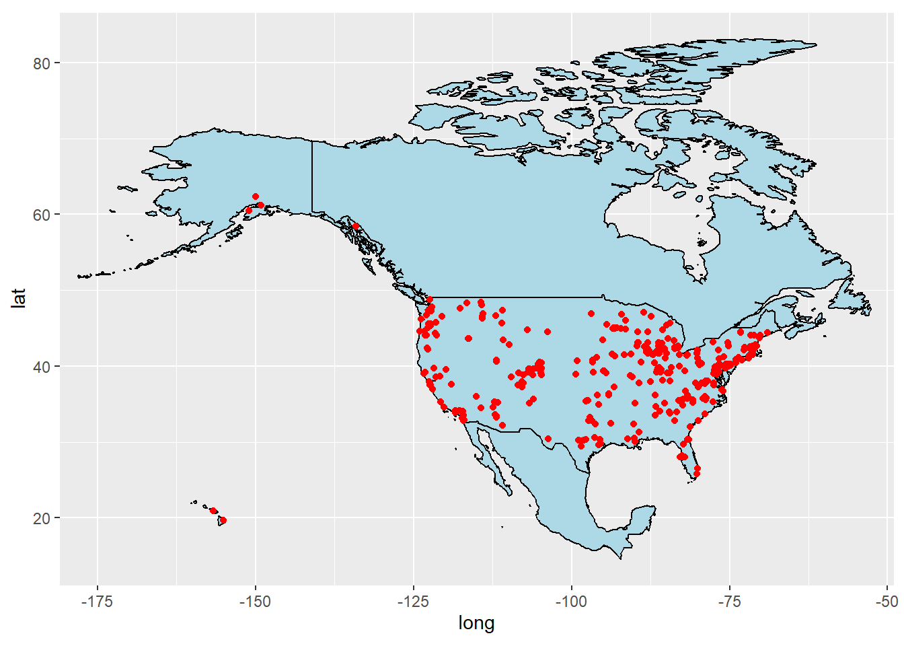
WritePath <- "D:/University/SMU/Doing_Data_Science/DDS_repository/Doing-Data-Science/Unit7/us_locations_data.csv"
write.csv(lmerged_data3, file = WritePath, row.names = FALSE)
lmerged_data3# Map stuff
# # Get U.S. state boundaries
# usa <- st_as_sf(maps::map("state", fill = TRUE, plot = FALSE))
#
# # Assuming breweries_data has columns: brewery_name, latitude, longitude
# breweries_sf <- st_as_sf(lmerged_data3, coords = c("city_long", "city_lat"), crs = 4326)
#
# # Merge with state boundaries
# usa_breweries <- st_join(usa, breweries_sf)
#
#
#
#
# # Plot the map
# ggplot(lmerged_data3, aes(x = long, y = lat, group = group)) +
# geom_polygon(aes(fill = nrow(us.cities)), color = "white") +
# scale_fill_continuous(name = "Number of Breweries") +
# coord_map() +
#theme_minimal()Question 1: How many breweries are present in each state?
# Load the geospatial data for the states
states <- map_data("state")
# Calculate the number of breweries in each state
brewery_count <- lmerged_data3 %>%
group_by(State) %>%
summarise(BreweryCount = n_distinct(Brewery_id))
# Create a table using kable
brewery_table <- brewery_count %>%
kable(format = "markdown") %>%
kable_styling(full_width = TRUE, # Set to TRUE if you want a full-width table
bootstrap_options = c("striped", "hover", "condensed"),
position = "center")## Warning in kable_styling(., full_width = TRUE, bootstrap_options = c("striped", : Please specify format in kable. kableExtra can customize either HTML or LaTeX outputs. See
## https://haozhu233.github.io/kableExtra/ for details.brewery_table| State | BreweryCount |
|---|---|
| alabama | 3 |
| alaska | 7 |
| arizona | 11 |
| arkansas | 2 |
| california | 39 |
| colorado | 47 |
| connecticut | 8 |
| delaware | 2 |
| district of columbia | 1 |
| florida | 15 |
| georgia | 7 |
| hawaii | 4 |
| idaho | 5 |
| illinois | 18 |
| indiana | 22 |
| iowa | 5 |
| kansas | 3 |
| kentucky | 4 |
| louisiana | 5 |
| maine | 9 |
| maryland | 7 |
| massachusetts | 23 |
| michigan | 32 |
| minnesota | 12 |
| mississippi | 2 |
| missouri | 9 |
| montana | 9 |
| nebraska | 5 |
| nevada | 2 |
| new hampshire | 3 |
| new jersey | 3 |
| new mexico | 4 |
| new york | 16 |
| north carolina | 19 |
| north dakota | 1 |
| ohio | 15 |
| oklahoma | 6 |
| oregon | 29 |
| pennsylvania | 25 |
| rhode island | 5 |
| south carolina | 4 |
| south dakota | 1 |
| tennessee | 3 |
| texas | 28 |
| utah | 4 |
| vermont | 10 |
| virginia | 16 |
| washington | 23 |
| west virginia | 1 |
| wisconsin | 20 |
| wyoming | 4 |
# Merge the brewery count data with the geospatial data
state_data <- merge(states, brewery_count, by.x = "region", by.y = "State", all.x = TRUE)
# Create a data frame with state names and their centers
state_centers <- data.frame(region = tolower(state.name), long = state.center$x, lat = state.center$y)
# Merge the state centers data with the brewery count data
state_centers <- merge(state_centers, brewery_count, by.x = "region", by.y = "State")
# Create the heatmap with state numbers
ggplot(state_data, aes(x = long, y = lat)) +
geom_polygon(aes(group = group, fill = BreweryCount)) +
geom_text(data = state_centers, aes(x = long, y = lat, label = BreweryCount), size = 3) +
scale_fill_gradient(low = "cornflowerblue", high = "blue", name = "Brewery Count") +
labs(title = "Brewery Count by State", fill = "Brewery Count") +
theme_bw()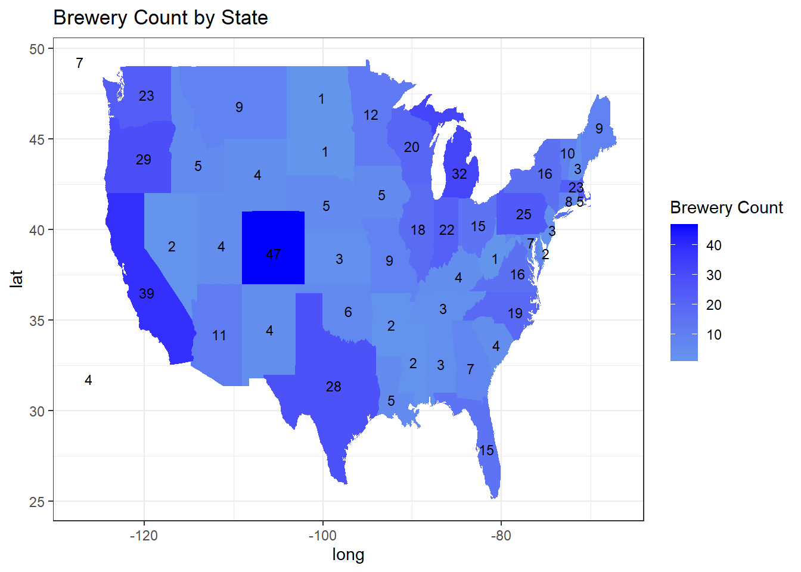
Question 4: Compute the median alcohol content and international bitterness unit for each state. Plot a bar chart to compare.
# Compute median ABV and IBU by state
beer_values <- lmerged_data3 %>%
na.omit() %>%
group_by(Abbr) %>%
summarise(Median_ABV = median(ABV), Median_IBU = median(IBU)) %>%
arrange(Abbr)
# Set the width and height for the plot
plot_width <- 20 # Adjust the width of saved plot
plot_height <- 6 # Adjust the height of saved plot
# Create a bar chart with increased bar width and larger plot size
p1 <- ggplot(data=beer_values, aes(x=reorder(Abbr, -Median_ABV), y=Median_ABV)) +
geom_bar(stat="identity", fill="blue", width = 0.8) + # Adjust bar width (e.g., 0.8)
theme_bw() +
scale_color_economist() +
theme(axis.text.x = element_text(size = rel(0.8), angle = 90)) + # Adjust text
geom_text(aes(label = round(Median_ABV, 3)), vjust = -0.5, position = position_dodge(width = 0.8)) +
ggtitle("Median ABV by State") +
labs(x = "State", y = "ABV") +
coord_cartesian(ylim = c(0, max(beer_values$Median_ABV) * 1.2)) # Adjust the total horizontal width
p1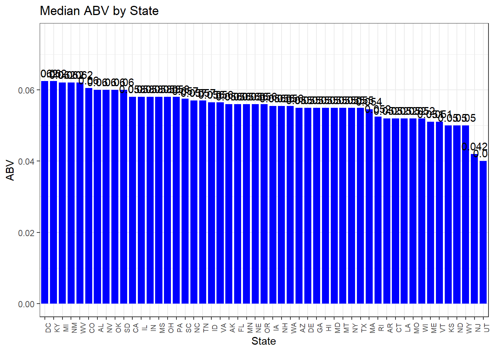
# Create a larger plot (You need to get this one from the working drive)
ggsave("median_abv_plot.png", p1, width = plot_width, height = plot_height)
p2 <- ggplot(data=beer_values, aes(x=reorder(Abbr, -Median_IBU), y=Median_IBU)) +
geom_bar(stat="identity", fill="blue")+
theme_bw() +
scale_color_economist()+
theme(axis.text.x=element_text(size=rel(0.8), angle=90))+
geom_text(aes(label = round(Median_IBU, 3)), vjust = -0.5) +
ggtitle("Median IBU by State") +
labs(x="State",y="IBU")
p2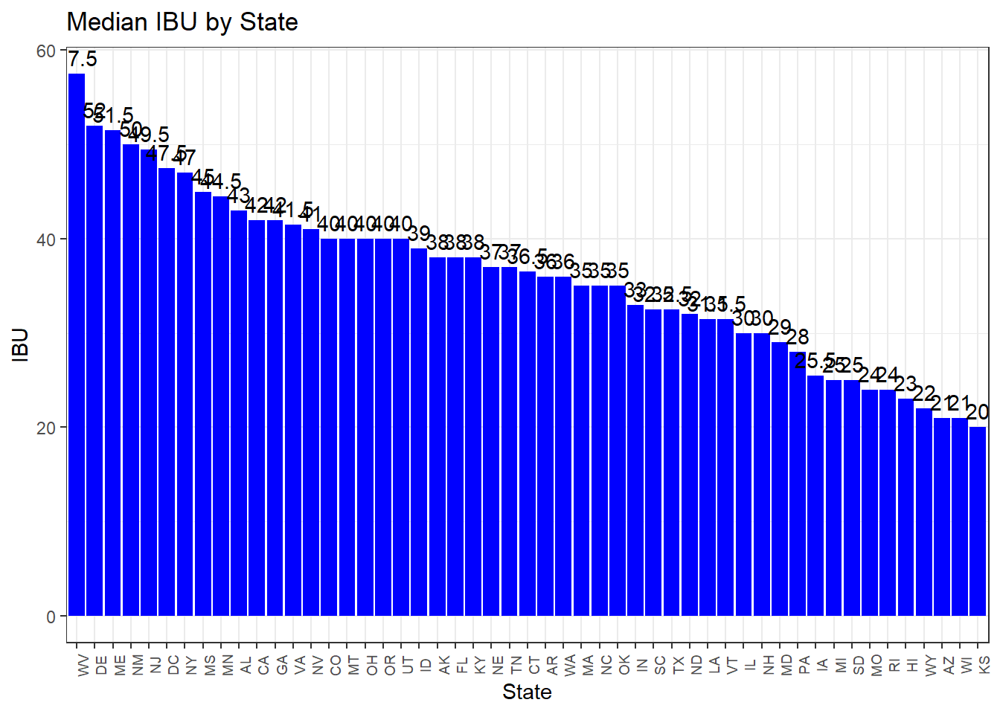
# Create a larger plot (You need to get this one from the working drive)
ggsave("median_ibu_plot.png", p2, width = plot_width, height = plot_height)Question 5: Which state has the most alcoholic (ABV) beer? Which state has the most bitter (IBU) beer?
# State with maximum ABV
max_abv_state <- beer_values %>%
filter(Median_ABV == max(Median_ABV))
# State with most bitter beer
max_ibu_state <- beer_values %>%
filter(Median_IBU == max(Median_IBU))
# Extract the max(ABV), Abbr, and Beer_Name values
max_ibu <- max(merged_data5$IBU, na.rm = TRUE)
max_ibu_row <- merged_data5[which.max(merged_data5$IBU), c("Abbr", "Beer_Name")]
# Concatenate the values into a sentence
cat("The most bitter beer is", max_ibu_row$Beer_Name, "from", max_ibu_row$Abbr, "with an IBU of", max_ibu, ".\n" )## The most bitter beer is Survival Stout from OR with an IBU of 138 .# Extract the max(ABV), Abbr, and Beer_Name values
max_abv <- max(merged_data5$ABV, na.rm = TRUE)
max_abv_row <- merged_data5[which.max(merged_data5$ABV), c("Abbr", "Beer_Name")]
# Concatenate the values into a sentence
cat("The beer with the highest ABV is", max_abv_row$Beer_Name, "from", max_abv_row$Abbr, "with an ABV of", max_abv, ".\n")## The beer with the highest ABV is Lee Hill Series Vol. 5 - Belgian Style Quadrupel Ale from CO with an ABV of 0.128 .# Print the results
cat("State with highest average ABV:", max_abv_state$Abbr, " ABV level: ", max_abv_state$Median_ABV, "\n")## State with highest average ABV: DC KY ABV level: 0.0625 0.0625cat("State with most bitter beer on average:", max_ibu_state$Abbr, " IBU level: ", max_ibu_state$Median_IBU, "\n")## State with most bitter beer on average: WV IBU level: 57.5Question 6: Comment on the summary statistics and distribution of the ABV variable.
# Histogram to display the distribution of alcohol.
ggplot(data = lmerged_data3, aes(x = ABV)) +
geom_histogram(fill = "blue", color = "white") +
labs(title = "Distribution of Beer Alcohol Levels in the US", x = "ABV", y = "Frequency")## `stat_bin()` using `bins = 30`. Pick better value with `binwidth`.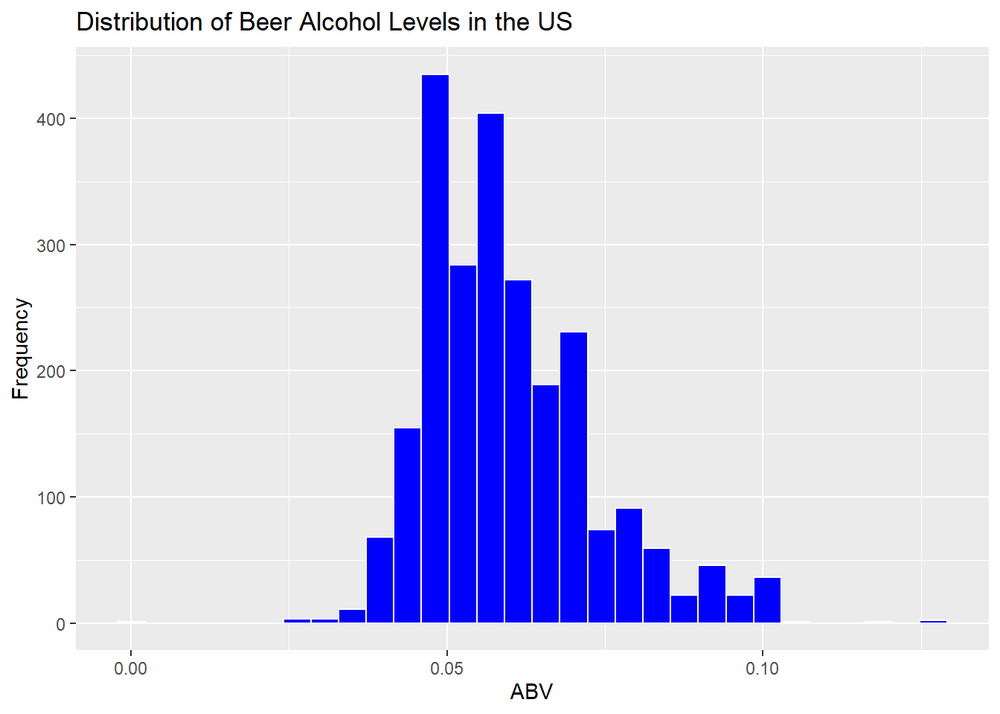
# Summary statistics for ABV
summary(lmerged_data3$ABV)## Min. 1st Qu. Median Mean 3rd Qu. Max.
## 0.00100 0.05000 0.05700 0.05973 0.06700 0.12800Question 7: Is there an apparent relationship between the bitterness of the beer and its alcoholic content? Draw a scatter plot. Make your best judgment of a relationship and EXPLAIN your answer.
# Original data check with no nulls.
# Remove NA as a verification of impact to the correlation table for ABV & IBU
merged_data6 <- merged_data2[!(is.na(merged_data2$IBU) | is.na(merged_data2$ABV)),]
merged_data6# Scatter plot
ggplot(lmerged_data3, aes(x = ABV, y = IBU)) +
geom_point(shape=1) +
geom_smooth(method=lm) + # add linear regression line
theme_bw() +
scale_color_economist()+
theme(axis.text.x=element_text(size=rel(1.0)))+
ggtitle("Correlation between ABV and IBU (Medians)") +
labs(x="ABV",y="IBU")## `geom_smooth()` using formula = 'y ~ x'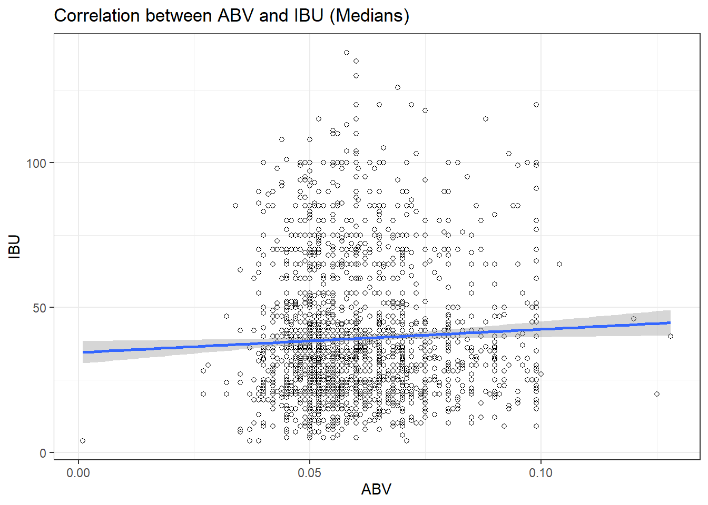
lmerged_data3# Scatter plot - original data with NAs removed
ggplot(merged_data6, aes(x = ABV, y = IBU)) +
geom_point(shape=1) +
geom_smooth(method=lm) + # add linear regression line
theme_bw() +
scale_color_economist()+
theme(axis.text.x=element_text(size=rel(1.0)))+
ggtitle("Correlation between ABV and IBU (Original data with NA values dropped) ") +
labs(x="ABV",y="IBU")## `geom_smooth()` using formula = 'y ~ x'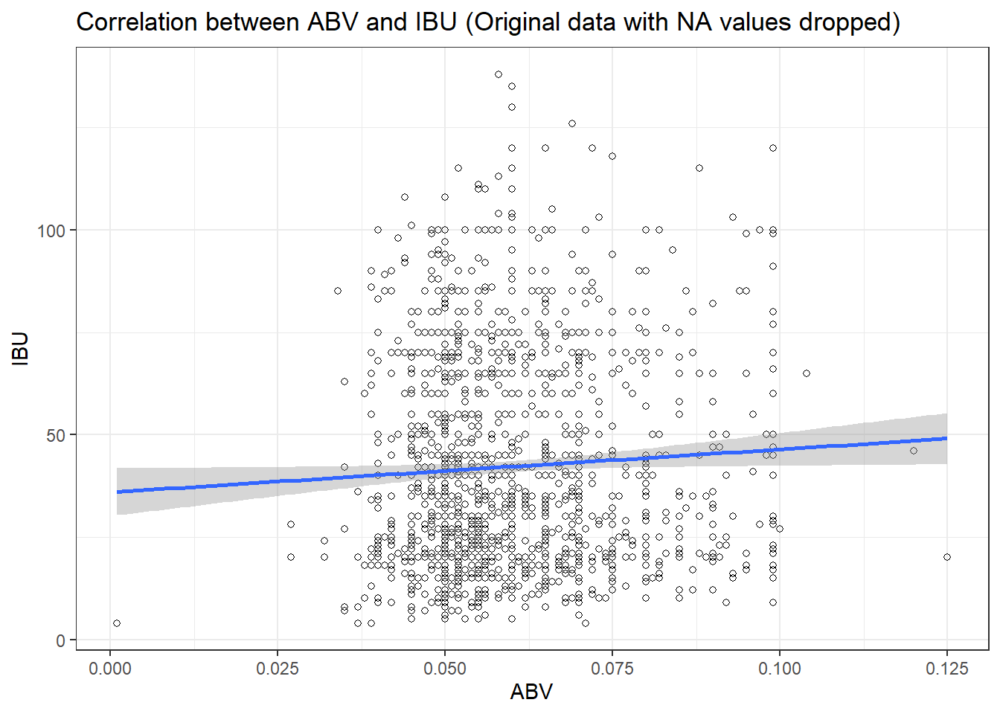
merged_data5merged_data7 <- merged_data5
#arrange(merged_data6, Style)
# Check the unique values for errors
cat("Unique values in 'Style' column:\n")## Unique values in 'Style' column:unique_styles <- unique(merged_data6$Style)
unique_styles## [1] "Hefeweizen" "American Amber / Red Ale" "Czech Pilsener" "Witbier"
## [5] "American IPA" "American Brown Ale" "Altbier" "American Pale Ale (APA)"
## [9] "American Blonde Ale" "Cream Ale" "Scottish Ale" "Irish Red Ale"
## [13] "Irish Dry Stout" "English Pale Ale" "American Double / Imperial IPA" "Oatmeal Stout"
## [17] "Kölsch" "Milk / Sweet Stout" "American Pilsner" ""
## [21] "Winter Warmer" "American Porter" "Fruit / Vegetable Beer" "Märzen / Oktoberfest"
## [25] "Belgian IPA" "Herbed / Spiced Beer" "Tripel" "American Double / Imperial Stout"
## [29] "German Pilsener" "American Amber / Red Lager" "Gose" "Baltic Porter"
## [33] "American Barleywine" "Vienna Lager" "American Pale Wheat Ale" "American Black Ale"
## [37] "California Common / Steam Beer" "Kristalweizen" "Munich Helles Lager" "Wheat Ale"
## [41] "English India Pale Ale (IPA)" "Saison / Farmhouse Ale" "English Brown Ale" "Maibock / Helles Bock"
## [45] "American Pale Lager" "American Stout" "Pumpkin Ale" "Rye Beer"
## [49] "Belgian Pale Ale" "Scotch Ale / Wee Heavy" "Low Alcohol Beer" "Mead"
## [53] "American Strong Ale" "Belgian Strong Pale Ale" "Munich Dunkel Lager" "Chile Beer"
## [57] "American Wild Ale" "Roggenbier" "Schwarzbier" "American White IPA"
## [61] "Russian Imperial Stout" "Foreign / Export Stout" "Old Ale" "Berliner Weissbier"
## [65] "Bock" "Belgian Strong Dark Ale" "Doppelbock" "Dortmunder / Export Lager"
## [69] "Abbey Single Ale" "English Barleywine" "English Strong Ale" "Belgian Dark Ale"
## [73] "English Dark Mild Ale" "English Stout" "Extra Special / Strong Bitter (ESB)" "Flanders Oud Bruin"
## [77] "Euro Dark Lager" "Dubbel" "English Pale Mild Ale" "Cider"
## [81] "American India Pale Lager" "Light Lager" "Other" "Quadrupel (Quad)"
## [85] "Bière de Garde" "American Adjunct Lager" "English Bitter" "Shandy"
## [89] "Keller Bier / Zwickel Bier" "American Dark Wheat Ale" "Dunkelweizen" "Radler"
## [93] "Grisette" "Smoked Beer" "Euro Pale Lager" "American Malt Liquor"# add a new column for analyzing Ale styles
merged_data6$Ale_Style <- ifelse(grepl("India Pale Ale|IPA", merged_data6$Style), "IPA", ifelse(grepl("Ale", merged_data6$Style) & !grepl("India Pale Ale|IPA", merged_data6$Style), "Ale", "other beer"))
merged_data6 lmerged_data3$Ale_Style <- ifelse(grepl("India Pale Ale|IPA", lmerged_data3$Style), "IPA", ifelse(grepl("Ale", lmerged_data3$Style) & !grepl("India Pale Ale|IPA", lmerged_data3$Style), "Ale", "other beer"))Questions 8 part1: Budweiser would also like to investigate the difference with respect to IBU and ABV between IPAs (India Pale Ales) and other types of Ale (any beer with “Ale” in its name other than IPA). You decide to use KNN classification to investigate this relationship. Provide statistical evidence one way or the other. You can of course assume your audience is comfortable with percentages … KNN is very easy to understand conceptually.
# Use the original data without nulls to check for differences
ggplot(merged_data6, aes(x = IBU, y = ABV, color = Ale_Style)) + geom_point()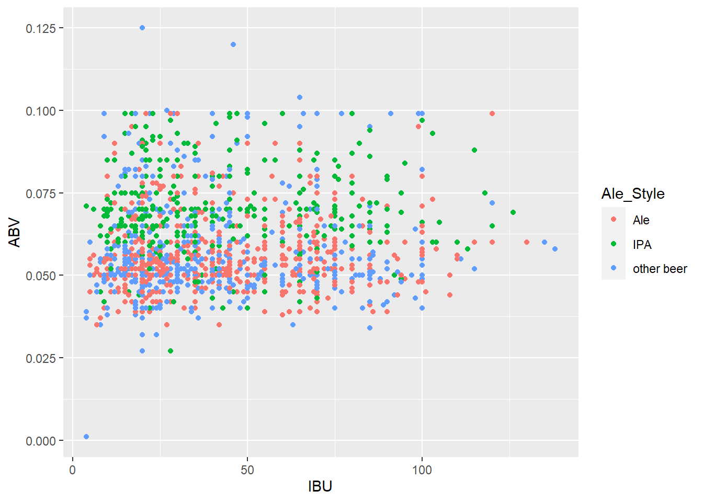
ggplot(lmerged_data3, aes(x = IBU, y = ABV, color = Ale_Style)) + geom_point()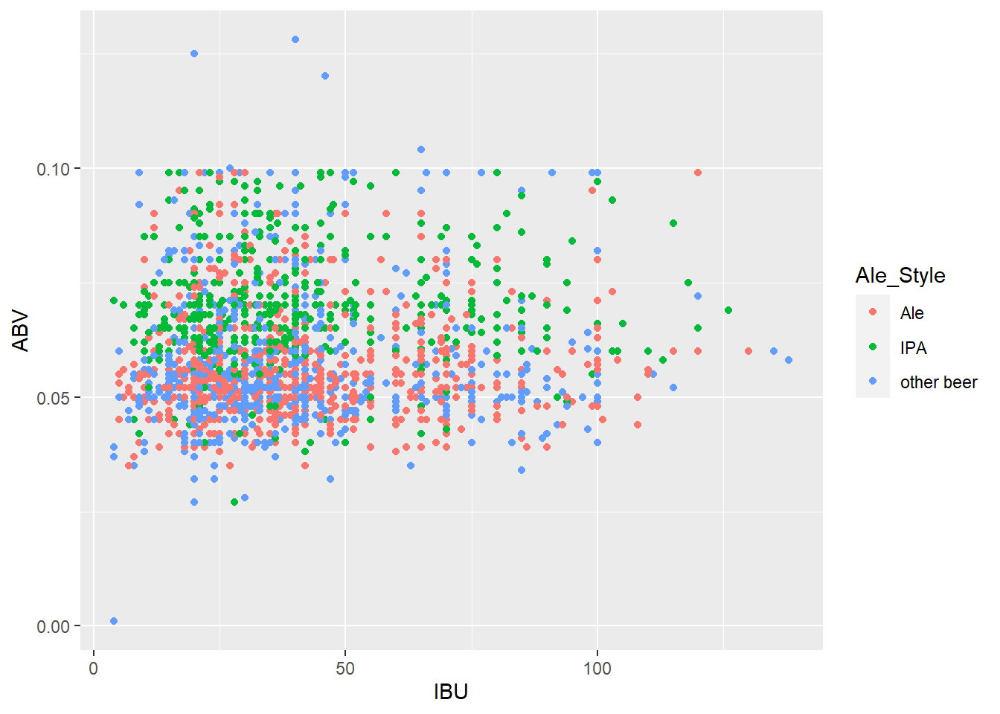
# Filter the dataset to exclude the "beer" category
filtered_data <- subset(merged_data6, Ale_Style %in% c("Ale", "IPA"))
# Define the colors for Ale and IPA
ale_color <- "red"
ipa_color <- "blue"
# Create the scatterplot with regression lines for "Ale" and "IPA"
ggplot(filtered_data, aes(x = IBU, y = ABV, color = Ale_Style)) +
geom_point() +
scale_color_manual(values = c(Ale = ale_color, IPA = ipa_color)) +
geom_smooth(method = "lm", se = FALSE, formula = y ~ x,
data = subset(filtered_data, Ale_Style %in% c("Ale")), color = "black") +
geom_smooth(method = "lm", se = FALSE, formula = y ~ x,
data = subset(filtered_data, Ale_Style %in% c("IPA")), color = "black") +
labs(title = "The relationship of IBU to ABV by Ale Style") +
theme_bw()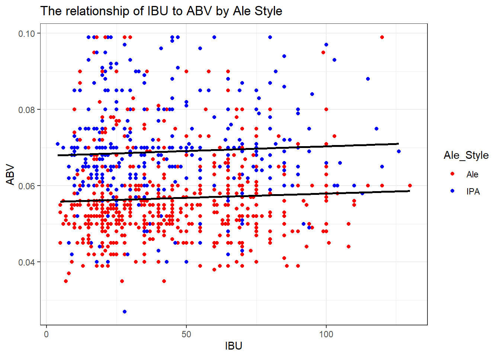
p <- ggplot(data = merged_data6, aes(x = ABV, y = IBU, color = Ale_Style)) + geom_point(shape=1) +
geom_smooth(method=lm, color = "black") + # add linear regression line
labs(title = "Scatter Plots of IBU vs. ABV by Beer Style") +
theme_bw()
p + facet_wrap(~Ale_Style, ncol = 1)## `geom_smooth()` using formula = 'y ~ x'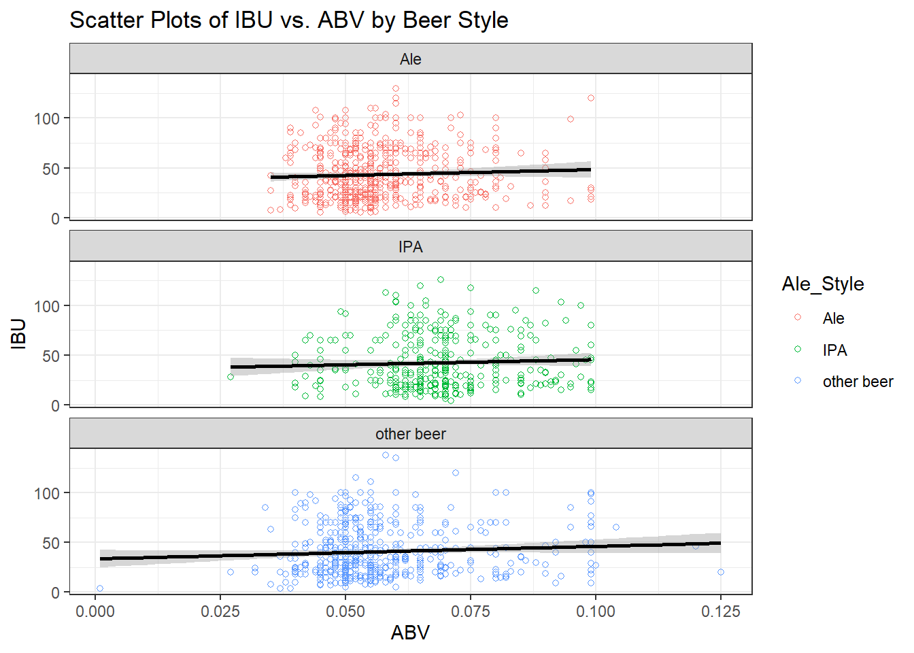
# Create separate data frames for each Ale_Style
ipa_data <- merged_data6[merged_data6$Ale_Style == "IPA", ]
ale_data <- merged_data6[merged_data6$Ale_Style == "Ale", ]
other_beer_data <- merged_data6[merged_data6$Ale_Style == "other beer", ]
# Create scatter plots with regression lines for each Ale_Style
ipa_plot <- ggplot(ipa_data, aes(x = IBU, y = ABV)) + geom_point() + geom_smooth(method = "lm") + labs(title = "India Pale Ale", x = "IBU", y = "ABV")
ale_plot <- ggplot(ale_data, aes(x = IBU, y = ABV)) + geom_point() + geom_smooth(method = "lm") + labs(title = "Ale", x = "IBU", y = "ABV")
other_beer_plot <- ggplot(other_beer_data, aes(x = IBU, y = ABV)) + geom_point() + geom_smooth(method = "lm") + labs(title = "Other Beer", x = "IBU", y = "ABV")
ipa_plot## `geom_smooth()` using formula = 'y ~ x'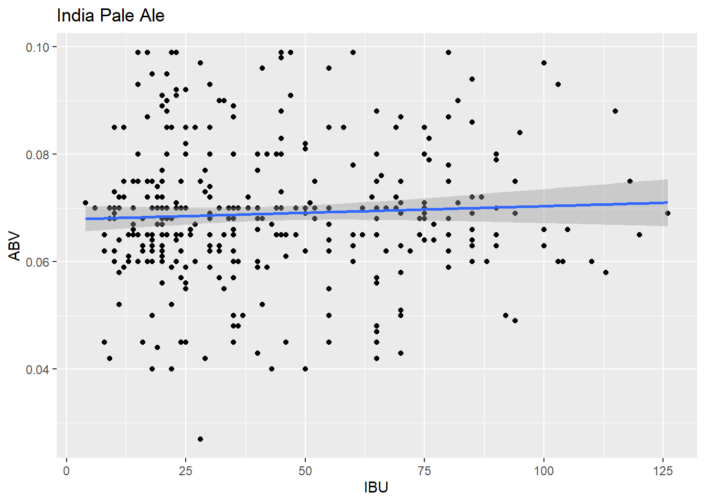
ale_plot## `geom_smooth()` using formula = 'y ~ x'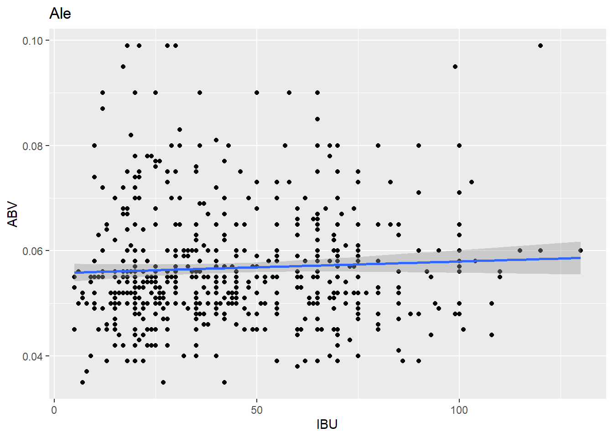
other_beer_plot## `geom_smooth()` using formula = 'y ~ x'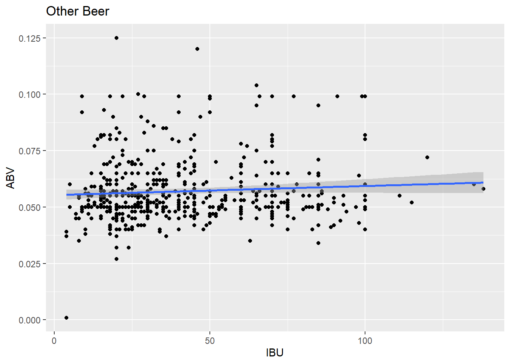 # Questions 8 part2: Budweiser would also like to investigate the difference with respect to IBU and ABV between IPAs (India Pale Ales) and other types of Ale (any beer with “Ale” in its name other than IPA). You decide to use KNN classification to investigate this relationship. Provide statistical evidence one way or the other. You can of course assume your audience is comfortable with percentages … KNN is very easy to understand conceptually.
knn_clean_data <- merged_data6 %>%
filter(merged_data6$Ale_Style != "other beer")
knn_clean_data# and a testing set of 291 observations
beersample_indices <- sample(1:nrow(knn_clean_data), 673)
training_set <- knn_clean_data[beersample_indices, ]
training_settesting_set <- knn_clean_data[-beersample_indices, ]
testing_set# Remove rows with NA in 'Age' and 'Pclass' columns
training_set <- na.omit(training_set)
testing_set <- na.omit(testing_set)
# Use KNN to classify passengers in the testing set
classifications <- knn(train = training_set[, c("ABV", "IBU")],
test = testing_set[, c("ABV", "IBU")],
cl = training_set$Ale_Style, prob = TRUE, k = 13)
# Make sure 'classifications' and 'testing_set$Survived' have the same length
if (length(classifications) != nrow(testing_set)) {
stop("Mismatch in the length of 'classifications' and 'testing_set$Survived'")
}
# Create a table to compare the predicted classes with the actual classes
class_table <- table(classifications, testing_set$Ale_Style)
# Calculate and print the confusion matrix
confusion_matrix <- confusionMatrix(class_table)
print(confusion_matrix)## Confusion Matrix and Statistics
##
##
## classifications Ale IPA
## Ale 159 55
## IPA 33 38
##
## Accuracy : 0.6912
## 95% CI : (0.634, 0.7444)
## No Information Rate : 0.6737
## P-Value [Acc > NIR] : 0.28657
##
## Kappa : 0.2521
##
## Mcnemar's Test P-Value : 0.02518
##
## Sensitivity : 0.8281
## Specificity : 0.4086
## Pos Pred Value : 0.7430
## Neg Pred Value : 0.5352
## Prevalence : 0.6737
## Detection Rate : 0.5579
## Detection Prevalence : 0.7509
## Balanced Accuracy : 0.6184
##
## 'Positive' Class : Ale
## get the average of the test sets
Loop for many k and the average of many training / test partition
iterations = 500
numks = 30
masterAcc = matrix(nrow = iterations, ncol = numks)
for(j in 1:iterations)
{
accs = data.frame(accuracy = numeric(30), k = numeric(30))
beertrainIndices = sample(1:nrow(knn_clean_data), 673)
beertrain = knn_clean_data[beersample_indices, ]
beertest = knn_clean_data[-beersample_indices, ]
for(i in 1:30)
{
classifications <- knn(train = training_set[, c("ABV", "IBU")],
test = testing_set[, c("ABV", "IBU")],
cl = training_set$Ale_Style, prob = TRUE, k = i)
class_table = table(classifications, testing_set$Ale_Style)
CM = confusionMatrix(class_table)
masterAcc[j,i] = CM$overall[1]
}
}
MeanAcc = colMeans(masterAcc)
plot(seq(1,numks,1),MeanAcc, type = "l")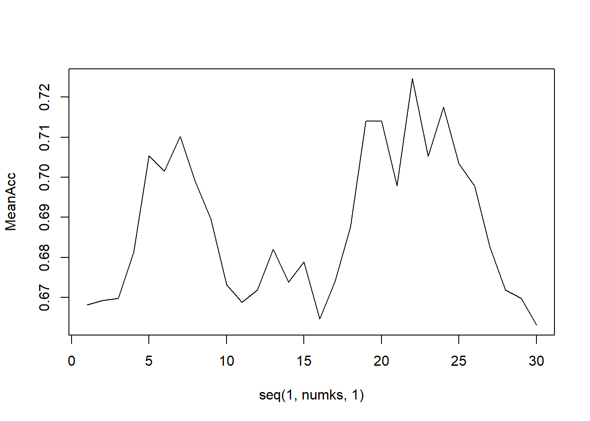
# Check the max IBU
max(knn_clean_data$IBU)## [1] 130min(knn_clean_data$IBU)## [1] 4# Define age bins
IBU_bins <- c(0, 20, 40, 60, 80, 100, 150)
# Create a summary table of counts with IBU bins
Ale_summary_table_IBU <- na.omit(knn_clean_data) %>%
mutate(IBUGroup = cut(IBU, breaks = IBU_bins),
Ale_Style = ifelse(Ale_Style == "IPA", "Indian Pale Ale", "Ale")) %>%
group_by(IBUGroup, Ale_Style) %>%
summarise(count = n())## `summarise()` has grouped output by 'IBUGroup'. You can override using the `.groups` argument.# Create a bar graph for IBU
IBU_plot <- ggplot(data = Ale_summary_table_IBU, aes(x = factor(IBUGroup), y = count, fill = factor(Ale_Style))) +
geom_bar(stat = "identity", position = "dodge") +
labs(
title = "Ale_Style by IBU values.",
x = "IBU Ranges",
y = "Count",
fill = "Ale Style"
) +
scale_fill_manual(values = c("Indian Pale Ale" = "red", "Ale" = "blue")) +
theme_bw() +
scale_x_discrete(labels = c("(0,20]", "(21,40]", "(41,60]", "(61,80]", "(81,100]", "(101,150]"))
# Define age bins
ABV_bins <- c(.0, .020, .040, .060, .080, .100, .150)
# Create a summary table of counts with ABV bins
Ale_summary_table_ABV <- na.omit(knn_clean_data) %>%
mutate(ABVGroup = cut(ABV, breaks = ABV_bins),
Ale_Style = ifelse(Ale_Style == "IPA", "Indian Pale Ale", "Ale")) %>%
group_by(ABVGroup, Ale_Style) %>%
summarise(count = n(), .groups = "drop")
# Create a bar graph for ABV
ABV_plot <- ggplot(data = Ale_summary_table_ABV, aes(x = factor(ABVGroup), y = count, fill = factor(Ale_Style))) +
geom_bar(stat = "identity", position = "dodge") +
labs(
title = "Ale_Style by ABV level.",
x = "ABV Ranges",
y = "Count",
fill = "Ale Style"
) +
scale_fill_manual(values = c("Indian Pale Ale" = "red", "Ale" = "blue")) +
theme_bw() +
scale_x_discrete(labels = c("(.0, .020]", "(.021, .040]", "(.041, .60]", "(.061, .80]", "(.081, .100]", "(.101, .150]"))
# Combine plots into a single plot
IBU_plot + ABV_plot + plot_layout(ncol=1)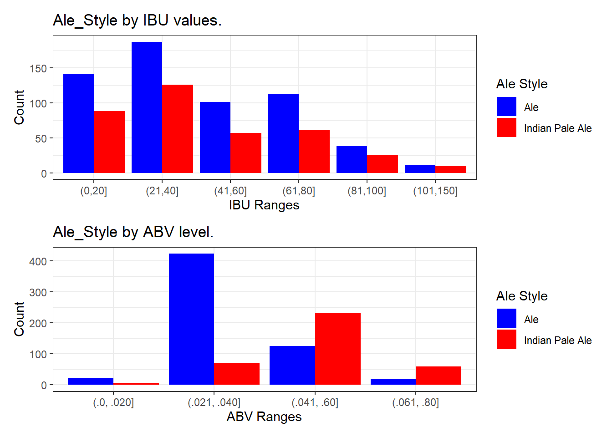
knn_model <- knn(train = merged_data6[merged_data6$Ale_Style != "other beer", c("IBU", "ABV")], test = merged_data6[merged_data6$Ale_Style == "other beer", c("IBU", "ABV")], cl = merged_data6[merged_data6$Ale_Style != "other beer", "Ale_Style"], k = 13)
ggplot(merged_data6[merged_data6$Ale_Style != "other beer", ], aes(x = IBU, y = ABV, color = Ale_Style)) + geom_point() + geom_point(data = merged_data6[merged_data6$Ale_Style == "other beer", ], aes(x = IBU, y = ABV, color = knn_model))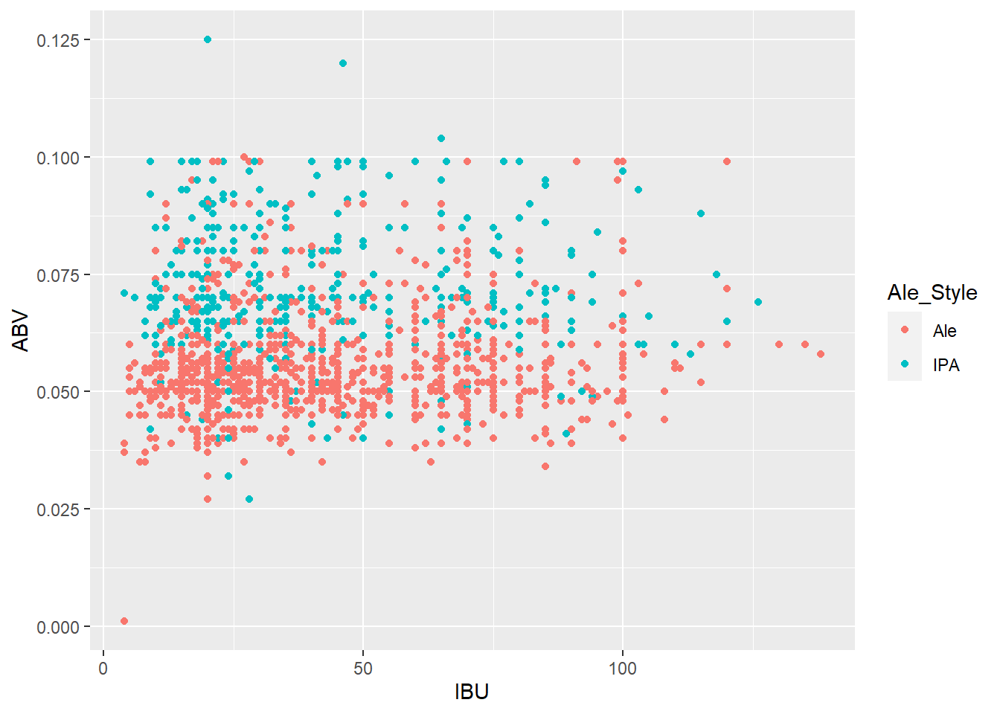
Path <- "D:/University/SMU/Doing_Data_Science/DDS_repository/Doing-Data-Science/Mid-Term_project/ConsumptionByState.csv"
Consumption_Data = read.csv(Path, header=TRUE)
Consumption_DataConsumption_Data2 <- Consumption_Data %>%
dplyr::select(state, year, ethanol_beer_gallons_per_capita, number_of_beers)
Consumption_Data2# Filter the data for the year 2017
consumption_2017 <- Consumption_Data %>%
filter(year == 2017)
# Reorder the 'state' factor levels by 'number_of_beers'
consumption_2017$state <- factor(consumption_2017$state, levels = consumption_2017$state[order(-consumption_2017$number_of_beers)])
# Set the plot dimensions
plot_width <- 30 # Adjust as needed
plot_height <- 6 # Adjust as needed
# Create a bar chart
p3 <- ggplot(consumption_2017, aes(x = state, y = number_of_beers)) +
geom_bar(stat = "identity", fill = "blue") +
labs(
title = "Beer Consumption by State by Number of Beers",
x = "State",
y = "Number of Beers"
) +
theme_bw() +
scale_color_economist()+
theme(axis.text.x=element_text(size=rel(0.8), angle=90))+
geom_text(aes(label = round(number_of_beers, 3)), vjust = -0.5)
# Create a larger plot
options(repr.plot.width = plot_width, repr.plot.height = plot_height)
print(p3)
# Create a larger plot (You need to get this one from the working drive)
ggsave("consumption_plot.png", p3, width = plot_width, height = plot_height)
# Reorder the 'state' factor levels by 'number_of_beers'
consumption_2017$state <- factor(consumption_2017$state, levels = consumption_2017$state[order(-consumption_2017$ethanol_beer_gallons_per_capita)])
# Create a bar chart
p4 <- ggplot(consumption_2017, aes(x = state, y = ethanol_beer_gallons_per_capita)) +
geom_bar(stat = "identity", fill = "blue") +
labs(
title = "Beer Consumption by State in Gallons",
x = "State",
y = "Ethanol Beer Gallons per Capita"
) +
theme_bw() +
scale_color_economist()+
theme(axis.text.x=element_text(size=rel(1.7), angle=90))+
geom_text(aes(label = round(number_of_beers, 2)), vjust = -0.5)
# Create a larger plot
options(repr.plot.width = plot_width, repr.plot.height = plot_height)
print(p4)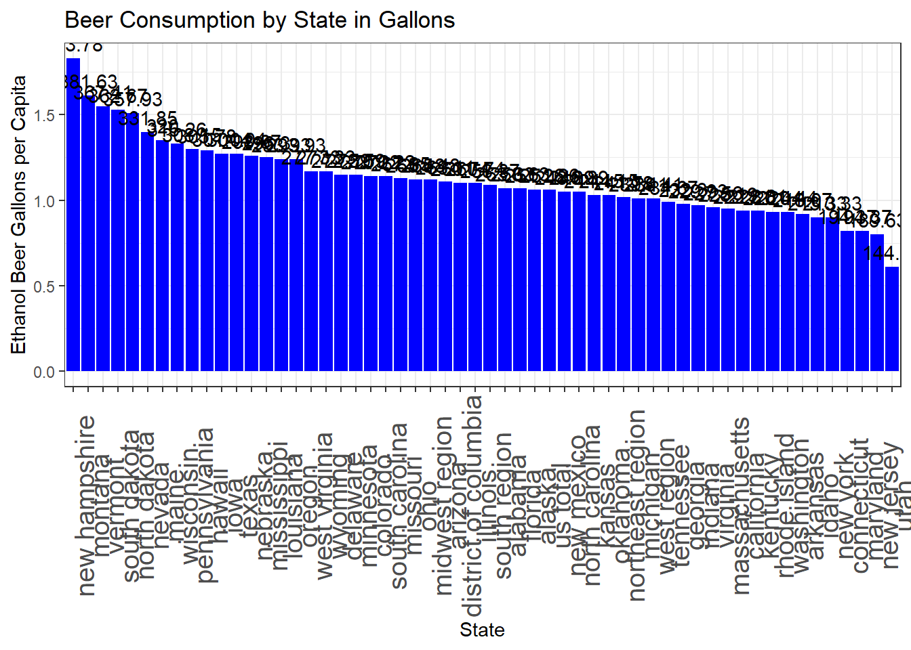
# Create a larger plot (You need to get this one from the working drive)
ggsave("consumption_number_plot.png", p4, width = plot_width, height = plot_height)# Filter the data for the years 2010 to 2017
Consumption_Data2_filtered <- Consumption_Data2 %>%
filter(year >= 2010)
# Create a histogram of total gallons consumed for the filtered data
ggplot(Consumption_Data2_filtered, aes(x = year, y = ethanol_beer_gallons_per_capita)) +
geom_bar(stat = "identity", position = "dodge", fill = "blue") +
labs(x = "Year", y = "Total gallons consumed")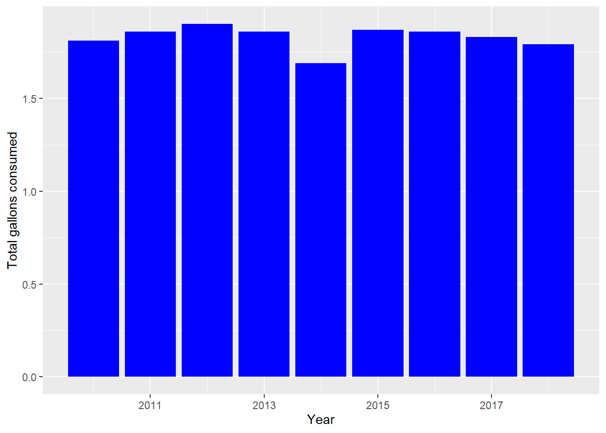